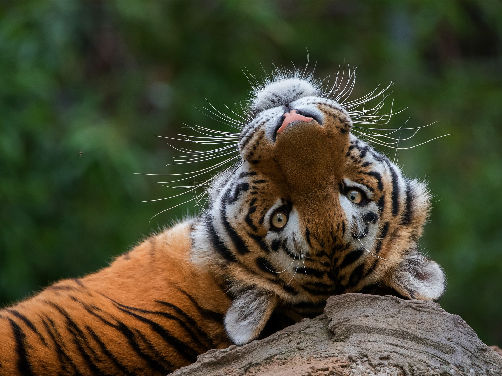
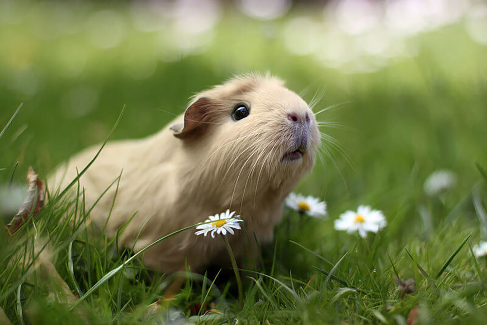
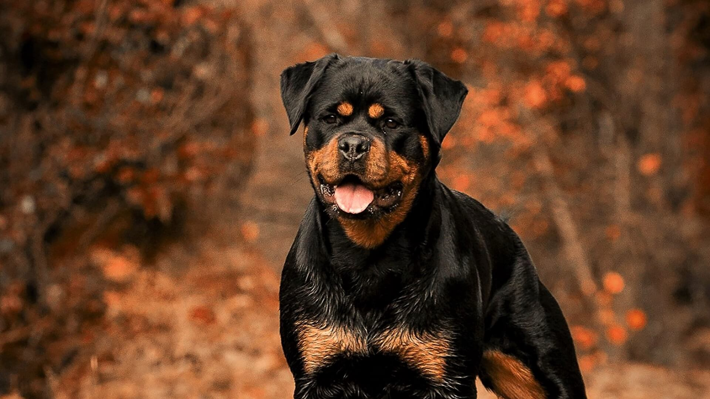
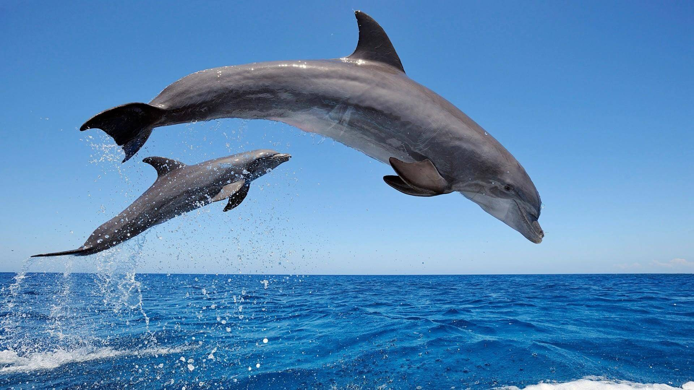
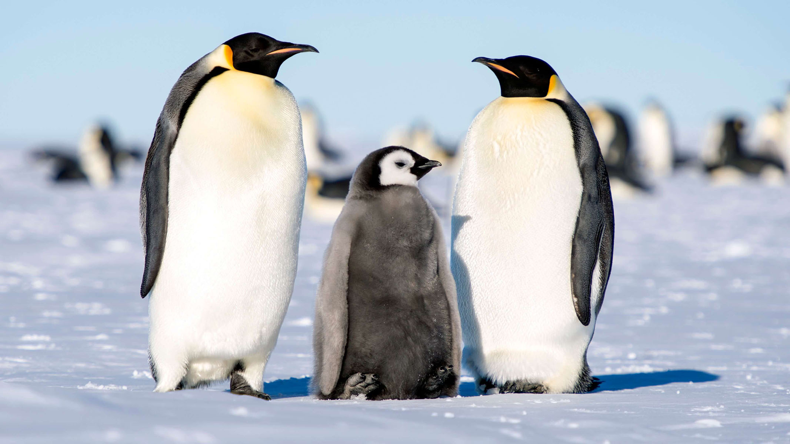

Die Meerschweinchen, lateinisch Cavia aparea porcellus, kommen aus den südamerikanischen Anden, wo die Temperatur relativ konstant und das Klima recht trocken ist. Sie wurden schon vor mehr als 3000 Jahren domestiziert, und kamen im 16. Jahrhundert auch nach Europa.Man nimmt an, dass sie bei uns Meerschweinchen heissen, weil sie übers Meer kamen und quieken wie ein Schweinchen.
duschen und trompeten. Im Gegensatz zum Asiatischen Elefanten besitzen Afrikanische Elefanten gleich zwei fingerartigen Muskelfortsätze am Rüssel, mit deren Hilfe sie Dinge greifen können. Diese stehen sich am Ende des Rüssels gegenüber. Insgesamt gibt es drei Elefanten-Arten weltweit: den Asiatischen Elefanten (Elephas maximus), den Afrikanischen Elefanten (Loxodonta africana) und der Waldelefanten (Loxodonta cyclotis).

Ein Hund ist ein Nachfahre des Wolfes. Er hat sich über tausende von Jahren dem Menschen und dessen Lebensstil angepasst. Zeit, Evolution und Intelligenz haben aus ihm ein Lebewesen geschaffen, das gelernt hat wie es den Menschen manipulieren kann. Kaum ein anderes Tier hat es nicht nur in unsere Wohnungen geschafft, sondern bis auf unsere Couch oder sogar bis in unser Bett.

Delfin ist nicht gleich Delfin. Es gibt rund 40 Delfinarten. Sie unterscheiden sich nicht nur in Größe, Gewicht, Ernährung, Verhalten, sondern auch in ihrem Aussehen und der Farbe. Sie können z. B. weiß, perlenfarben, rosa, braun, grau, blau und schwarz sein. Einige Delfine tragen das Wort „Wal“ in ihrem Namen, was durchaus verwirrend ist. So ist zum Beispiel der Schwertwal, also der Orca, auch ein Delfin. Die meisten Menschen denken aber an den „Großen Tümmler“, wenn sie von Delfinen reden.

Auf lateinisch bedeutet "penguis" soviel wie fett oder wohlgenährt. Das ist ein Kennzeichen von Alkenvögeln und Lummen, also Vögeln, die im hohen Norden leben. Und obwohl diese Vögel mit den Pinguinen überhaupt nicht verwandt sind, übertrugen die Seefahrer den Namen einfach auch auf alle ähnlich aussehenden Vögel, die eine dicke Speckschicht gegen die Kälte trugen. Pinguine leben aber nicht nur am Südpol, genau genommen sind sie in allen Ozeanen der Südhalbkugel zu finden. Die flugunfähigen Vögel besiedeln auch die Küstenwüsten Chiles und die Regenwälder Neuseelands.